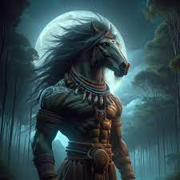
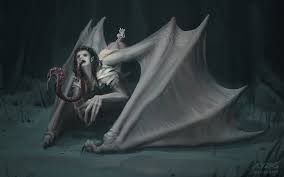
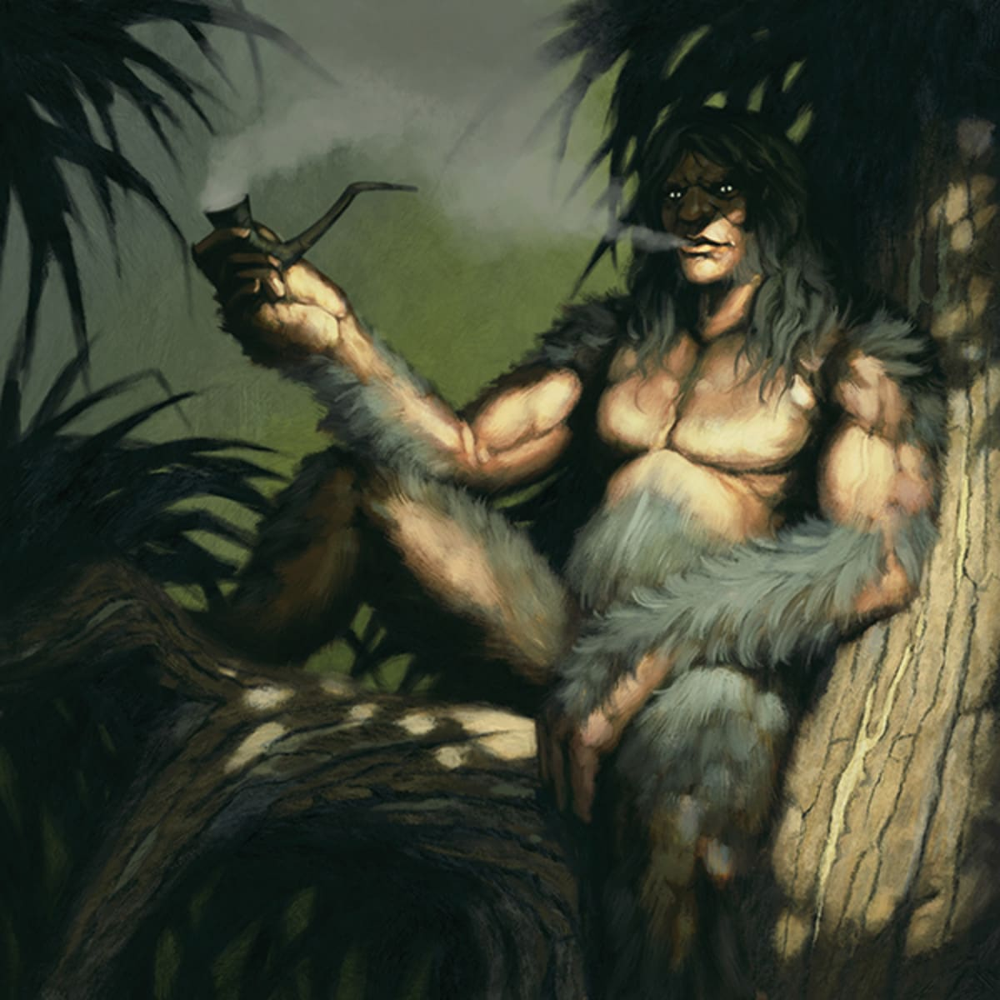

The Tikbalang: Trickster of the Trails
The Tikbalang, a half-horse, half-human creature, is known for leading travelers astray in the forests and mountains.
Read More →

Manananggal: The Winged Terror of the Night
The Manananggal is a vampire-like creature that separates her upper body and flies into the night, preying on the vulnerable.
Read More →

Kapre: Guardian or Menace?
The Kapre is a giant tree-dwelling creature that has been both feared and revered in Filipino folklore.
Read More →
Aswang: Evolution of a Shape-shifter
From a ghoul to a vampire and witch, the Aswang has evolved in the Filipino imagination.
Read More →